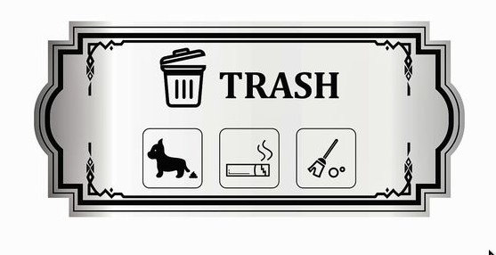
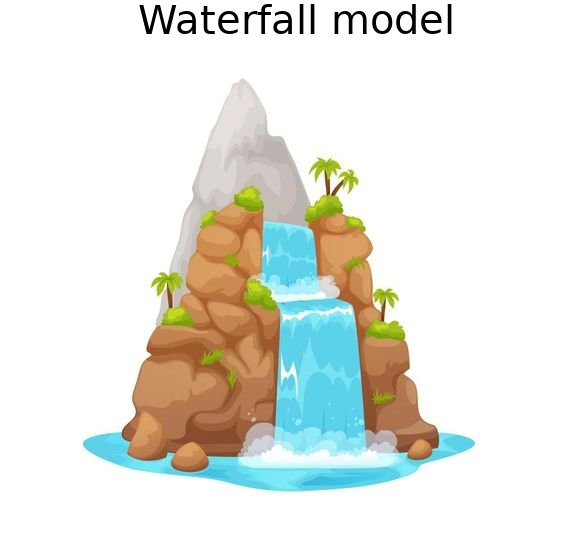
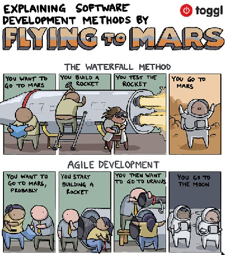
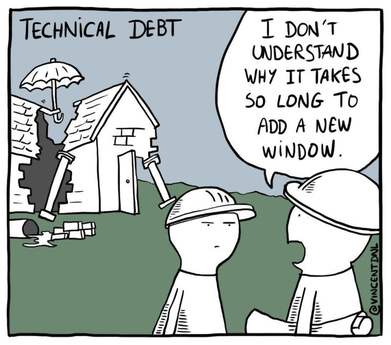
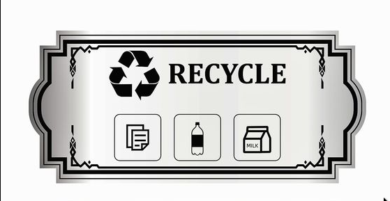

# Software development as a process <!-- [Olga Lyashevska](mailto:o.lyashevska@esciencecenter.nl) -->
How can we design and write ‘good’ software that meets its goals and requirements?
# Outline: - Programming vs software engineering - Stages in a software development process - Benefits of following a process of software development.
## Programming vs software engineering - Not the same - In academia, software is seen as a necessary but disposable by-product of the research process - Software is often written for themselves, not for others 
Software development process
Software requirements specifications
Design
Implementation
(This is where most start and end)
Testing
Deployment
Maintenance

## Waterfall vs Agile 
## Benefits of following a process of software development - A quality gate at the end of each stage - Predictability - each stage in a logical sequence - Transparency - stakeholders can see the progress - Time saving - "technical debt" can be compensated by good design choices 
## Software design - Software architecture (what components are needed and how they interact) - System architecture (how the software interacts with other systems) - User interface/ User Experience (how the user interacts with the software) 
## Good software design goals: - <strong>Understandable</strong> by developers who did not develop the code - <strong> Adaptable</strong> by designing the code to be easily modifiable and extensible to satisfy new requirements - <strong> Testable</strong> by designing the code in a sufficiently modular way to make it easier to test the functionality within a modular design <img src="./files/goodsoftware.jpg" style="width: 30%;">
## Discuss with your neighbour: 1. What is your current software development process? Do you adhere to it consistently? 1. How do software requirements influence the design and implementation of your software? 1. How can you improve your existing workflow to better align with the software development process?